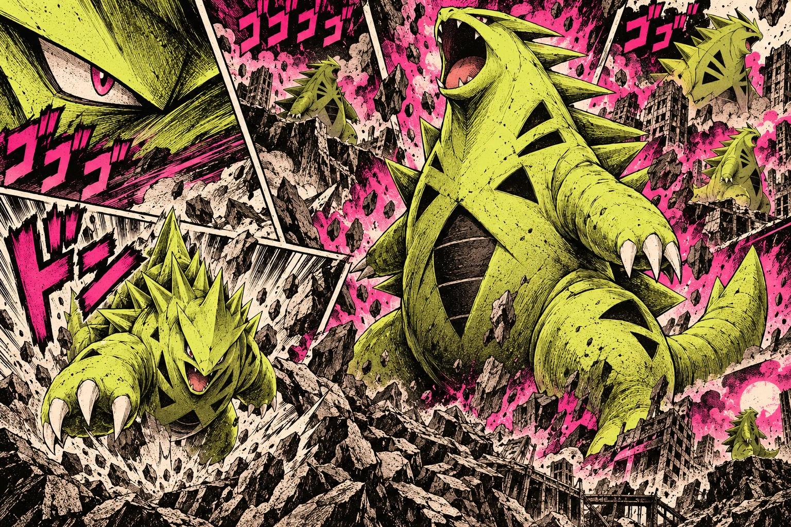

BLACK MINERAL
Harvested where lightning meets stone.
太古より受け継がれる、男の力。
THE POWDER OF KINGS.
A force sealed beneath the mountains. A formula whispered from warrior to warrior. A powder that does not ask whether you are ready.


失われた資料 / LOST PANEL

THE KING WITHIN AWAKENS.
Early printings contained no dosage instructions.
第一章 / THE AWAKENING
For centuries, the formula was said to belong only to men who crossed the black ridge before sunrise and returned carrying stone in both hands.
Modern life made the ritual inconvenient.
THEY PUT IT IN A JAR.
第二章 / ANCIENT FORMULA
Harvested where lightning meets stone.
Twisted beneath cedar forests for seven winters.
Found only above the cloud line.
The final ingredient is not discussed.
第三章 / STRENGTH INDEX
※ LEVEL FOUR WAS REMOVED FROM LATER PRINTINGS.
第四章 / VOICES OF MEN
“At 6:10 I missed the train. At 6:14 I no longer required trains.”
— T. SAKAMOTO, ACCOUNTING
“My supervisor asked me to lower my voice. I had not spoken.”
— H. MORI, SALES
“The jar says one scoop. Respect the jar.”
— NAME WITHHELD
NOW IS THE TIME TO AWAKEN.
覇王の粉 HAŌ NO KONA